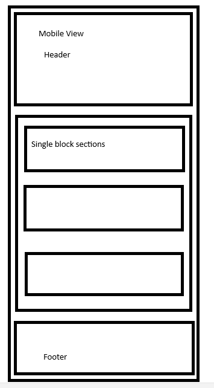
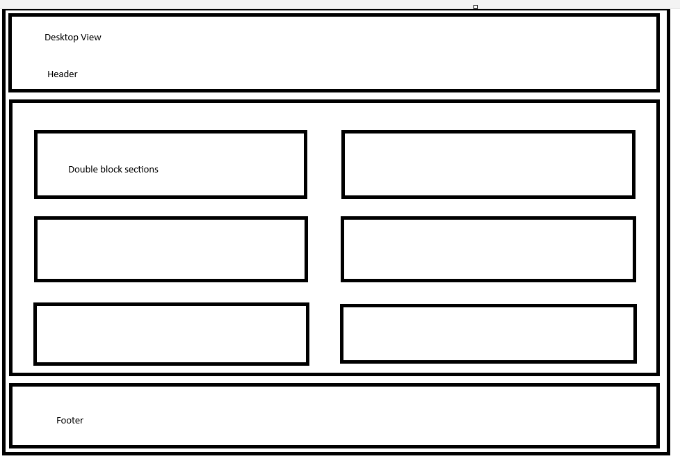

Site Name
Fullview System Hub
This name represents a complete business management solution that connects all essential business systems into one hub.
Optional domain availability: fullviewsystemhub.com
Site Purpose
To educate business owners on essential systems their company needs and how Bitrix24 can streamline them. The site will offer a free downloadable playbook, solution templates, and tutorials.
Scenarios
- How can I get a free business systems playbook to improve my business?
- What templates and tools are available to help me implement Bitrix24?
Color Schema
- Primary:
White - Accent:
#ffc107 - Background:
#f4f4f4 - Text:
#333
Typography
Font: Open Sans – used for headings and body text. Clean and readable for modern web presentation.
Wireframes
Mobile View:
Desktop View:
